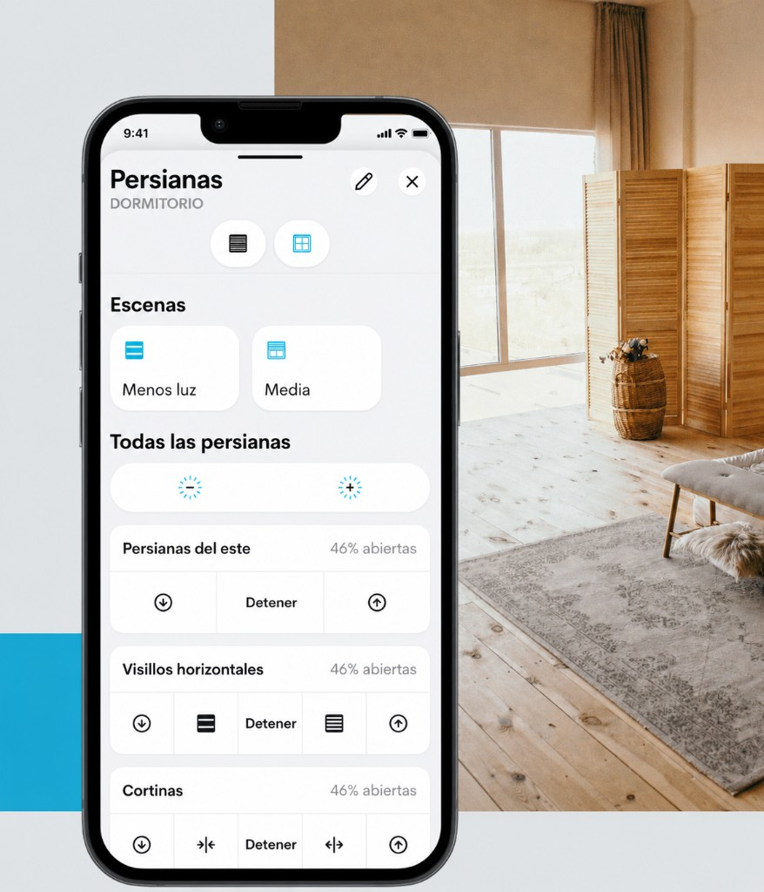

Crestron Home® — Persianas y estores
Controlá la entrada de luz con precisión, privacidad y una estética que acompaña la arquitectura de cada ambiente.

Crestron Home® — Persianas y estores
Controlá la entrada de luz con precisión, privacidad y una estética que acompaña la arquitectura de cada ambiente.
Luz y privacidad
La luz natural marca el ritmo del hogar: conviene tratarla con la misma exigencia con la que se elige cada material y cada textura.
Estar en contacto con el exterior nos hace sentir mejor, física y emocionalmente. Las cortinas y persianas motorizadas Crestron dialogan con la iluminación LED para modelar la entrada de sol a lo largo del día, atenuar reflejos en pantallas y enmarcar las vistas cuando la escena lo permite.
SolarTrac® y las escenas de Crestron Home OS alinean cortinas, estores y climatización con la misma lógica que las luces: confort visual, privacidad y eficiencia energética, sin fricción para quien habita la casa.

Control intuitivo
Las persianas motorizadas permiten manejar estores y cortinas de cualquier estilo desde un teclado de pared, un control remoto o el teléfono. Tanto si renovás, construís desde cero o actualizás el diseño interior, Crestron Home® OS es la base inteligente para unificar todo.
Por qué cortinas y persianas Crestron
Composición de luz que respeta el día: menos deslumbramiento en pantallas y más vistas al exterior cuando corresponde.
Motores cableados para proyectos con cableado previo; soluciones inalámbricas para remodelaciones o para motorizar persianas manuales existentes.
Tecnología de motor digital de bajo ruido para un recorrido suave del tejido, con control fino de posición y rendimiento pensado para el día a día.
Amplia oferta de enrollables y tejidos tipo sheer para filtrar la luz con estética cuidada, en línea con interiores clásicos, modernos o contemporáneos.
Escenas que mezclan luces y persianas — cine en casa, amanecer, trabajo desde casa — con un solo toque en la app o en la pared.
Menos carga térmica en verano al bloquear el sol directo y mejor aprovechamiento de la luz pasiva en invierno, coordinado con climatización.

Rendimiento
Las persianas motorizadas Crestron combinan motores compactos con operación casi silenciosa y control preciso del recorrido del tejido. Un sistema pensado para convivir con el diseño interior sin ruidos ni movimientos bruscos.

Crestron ofrece numerosas opciones de enrollables y tejidos tipo sheer para domar la luz con elegancia. Colecciones pensadas para convivir con estilos tradicionales, modernos o contemporáneos, siempre con la misma experiencia de control en Crestron Home.
Interactivo Crestron
Mové la hora y simulá cómo responden cortinas y estores en tiempo real según la posición del sol.

Integrá cortinas, persianas y estores con teclados que comparten el mismo lenguaje formal que el resto de Crestron Home.
La app Crestron Home es gratuita. Disponible en iOS y Android.